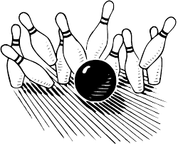

Activities Planned
Running a Tournament 
When the class did the Running a Tournament assignment, I chose to make a hybrid of soccer and bowling. I think that it wasn't a good tournament as although I had everything planned out, I still panicked a lot when the tournament was in action. Even though I planned everything thoroughly, when the time came to speak to everyone and to explain, I made some mistakes and led the whole thing downhill.